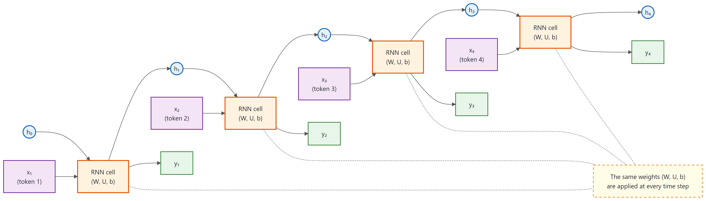
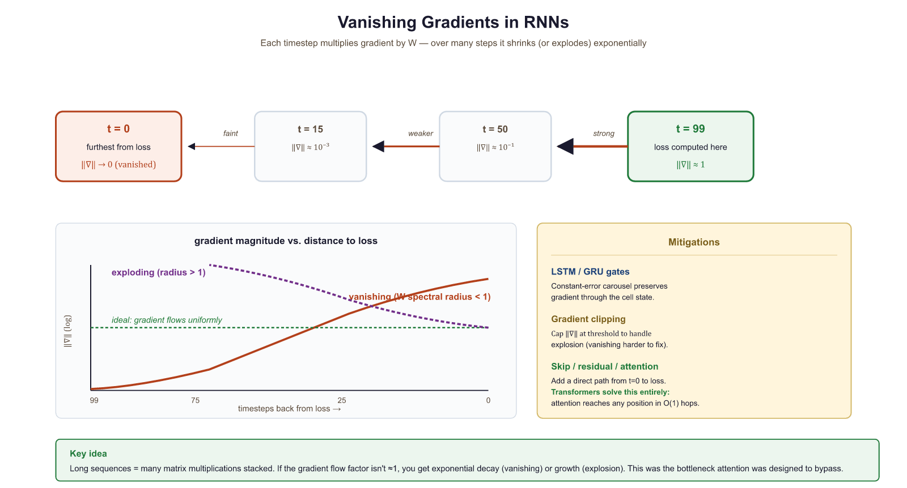
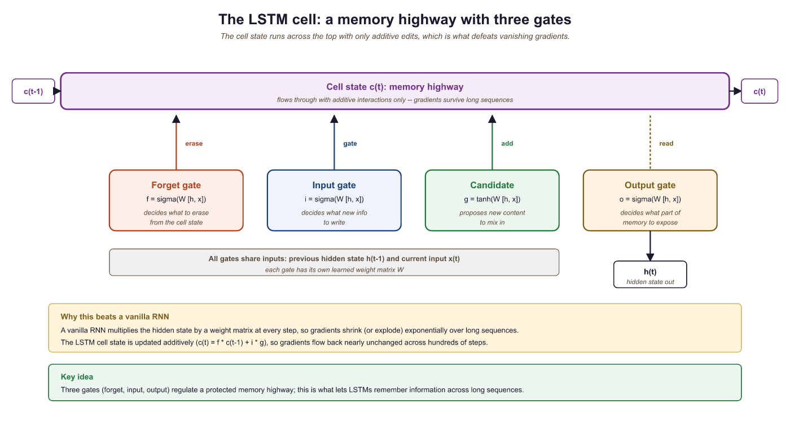
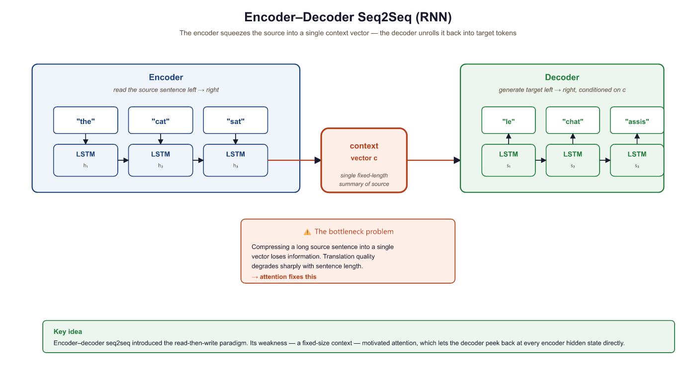

I tried to remember the beginning of this sentence, but my gradients vanished somewhere around the fourth word.
Attn, Gradient-Starved AI Agent
Why study RNNs if Transformers replaced them? Recurrent neural networks dominated sequence modeling for nearly a decade and remain the conceptual foundation for understanding why attention was invented. The specific limitations of RNNs (the vanishing gradient problem, the information bottleneck, sequential computation) motivated every design decision in the Transformer. Without understanding what went wrong with RNNs, the solutions in Sections 3.2 and 3.3 will feel arbitrary rather than inevitable. Think of this section as studying the problem before studying the solution. The neural network fundamentals from Section 0.2 and the text representations from Section 1.3 provide the building blocks we extend here.
Prerequisites
This section builds on neural network fundamentals from Section 0.2: Deep Learning Essentials (layers, backpropagation, activation functions) and word embeddings from Section 1.3. Understanding how tokens are produced by the subword algorithms in Section 1.6 provides useful context for the input representation.
2.1.1 The Sequence Modeling Problem
In Chapter 1, you learned how text is converted into sequences of token IDs. Now those sequences need to be processed. How does a neural network read a sentence one token at a time and build an understanding of the whole? Language is inherently sequential. The meaning of a word depends on the words that came before it: "bank" means something entirely different in "river bank" versus "bank account." Any neural network that processes language must therefore have a mechanism for incorporating context from earlier positions in a sequence.
A standard feedforward network (an MLP) cannot do this naturally. It takes a fixed-size input and produces a fixed-size output with no notion of ordering or memory. If you feed it one word at a time, it has no way to remember what came before. If you concatenate an entire sentence into one large input vector, you lose the ability to handle sentences of different lengths, and you learn position-specific weights rather than general sequential patterns.
The recurrent neural network (RNN) solves this by introducing a hidden state that acts as a form of memory. At each time step, the network reads one input token and combines it with its previous hidden state to produce a new hidden state. This allows information to flow forward through time, step by step.
If Transformers replaced RNNs, why spend time on them? Because the problems RNNs face (vanishing gradients, sequential bottlenecks, difficulty with long-range dependencies) are precisely what motivated every design decision in the Transformer. You cannot fully appreciate why attention was invented unless you first feel the pain of trying to compress an entire sentence through a single hidden-state vector. The frustration is the pedagogy.
2.1.2 RNN Fundamentals
To feel the pain that motivated attention, we have to first feel the recurrence itself. The vanilla RNN cell, just three matrix multiplications and a tanh, was the building block on which a decade of sequence modeling was constructed. Every later complication (LSTM gates, GRUs, residual connections) was added to fix a problem that the vanilla cell makes immediately visible.
The Vanilla RNN Cell
An RNN processes a sequence $(x_{1}, x_{2}, ..., x_{T})$ one element at a time. At each time step $t$, the RNN computes:
This hidden state is then linearly projected to produce the output at each time step:
Here, $h_{t}$ is the hidden state at time $t$, $W_{hh}$ is the recurrent weight matrix (hidden-to-hidden), $W_{xh}$ is the input weight matrix, and $W_{hy}$ maps the hidden state to the output. Crucially, these weight matrices are shared across all time steps, which is what allows the network to generalize to sequences of any length.
Looking at the unrolled diagram in Figure 2.1.2, beginners often count T copies of the RNN cell and assume the model has T times as many parameters as a single feedforward layer. There is exactly one cell with one set of weights; the unrolling is a visualization of running that same cell T times in sequence. A 4-layer feedforward network has 4 matrices and 4 nonlinearities; a 4-step RNN has 1 matrix and 1 nonlinearity applied 4 times. This is why the "depth" of an RNN in time is bought without parameter cost, but also why the same gradient flows through the same weights repeatedly, which is the root of the vanishing gradient problem you will meet in the next section.

Let us implement a vanilla RNN cell in PyTorch to make this concrete:
# Vanilla RNN cell from scratch: h_t = tanh(W_hh @ h + W_xh @ x + b).
# Shows how each time step mixes the previous hidden state with new input.
import torch
import torch.nn as nn
class VanillaRNNCell(nn.Module):
"""A single RNN cell: h_t = tanh(W_hh @ h_{t-1} + W_xh @ x_t + b)"""
def __init__(self, input_size, hidden_size):
super().__init__()
self.W_xh = nn.Linear(input_size, hidden_size)
self.W_hh = nn.Linear(hidden_size, hidden_size, bias=False)
self.hidden_size = hidden_size
def forward(self, x_t, h_prev):
# Combine input and previous hidden state, then apply tanh
return torch.tanh(self.W_xh(x_t) + self.W_hh(h_prev))
# Process a sequence of 5 tokens, each with embedding dim 10, hidden dim 20
cell = VanillaRNNCell(input_size=10, hidden_size=20)
seq = torch.randn(5, 10) # 5 time steps, 10-dim input each
h = torch.zeros(20) # initial hidden state
# Step through the sequence
for t in range(seq.size(0)):
h = cell(seq[t], h)
print(f"Step {t}: h norm = {h.norm():.4f}, h[:3] = {h[:3].tolist()}")
The manual cell above is valuable for understanding the internals. In practice, PyTorch provides a built-in module that processes entire sequences in a single optimized call with CuDNN acceleration:
# Production equivalent: process an entire sequence in one call
import torch, torch.nn as nn
rnn = nn.RNN(input_size=10, hidden_size=20, batch_first=True)
seq = torch.randn(1, 5, 10) # (batch=1, seq_len=5, input_dim=10)
output, h_final = rnn(seq) # output: all hidden states; h_final: last one
print(f"All hidden states: {output.shape}") # (1, 5, 20)
print(f"Final hidden state: {h_final.shape}") # (1, 1, 20)# Compare parameter counts: RNN vs LSTM vs GRU for the same
# input_size and hidden_size. LSTM has ~4x more parameters than RNN.
import torch
import torch.nn as nn
# Compare parameter counts
input_size, hidden_size = 128, 256
rnn = nn.RNN(input_size, hidden_size, batch_first=True)
lstm = nn.LSTM(input_size, hidden_size, batch_first=True)
gru = nn.GRU(input_size, hidden_size, batch_first=True)
for name, model in [("RNN", rnn), ("LSTM", lstm), ("GRU", gru)]:
params = sum(p.numel() for p in model.parameters())
print(f"{name:4s}: {params:>8,} parameters")
# Forward pass comparison
x = torch.randn(1, 50, input_size)
rnn_out, _ = rnn(x)
lstm_out, _ = lstm(x)
gru_out, _ = gru(x)
print(f"\nAll output shapes: {rnn_out.shape}") # Same for all threeNotice how each hidden state depends on the previous one. The final hidden state $h_{4}$ has (in principle) been influenced by every token in the sequence. This is the memory mechanism of the RNN. But as we will soon see, "in principle" and "in practice" diverge dramatically for long sequences.
2.1.3 The Vanishing and Exploding Gradient Problem
The vanishing gradient problem was identified in 1991 by Sepp Hochreiter, but the broader community did not fully appreciate it for years. Hochreiter later co-invented the LSTM to solve the very problem he had diagnosed, making him one of the rare researchers who both discovered the disease and invented the cure.
Training an RNN means computing gradients through time via backpropagation through time (BPTT). To update the weights, we need to know how the loss at time step $T$ depends on the hidden state at time step $t$. By the chain rule:
A Jacobian matrix collects all the partial derivatives of a vector-valued function. If a function maps a 2D input to a 2D output, its Jacobian is a 2×2 matrix where each entry tells you how one output changes when one input changes. Concrete example:
Suppose $f(x_{1}, x_{2}) = (x_{1}^{2} + x_{2}, 3x_{1}x_{2})$. At the point (1, 2):
In the RNN context, each Jacobian $\partial h_{k}/ \partial h_{k-1}$ captures how the hidden state at one time step changes with respect to the previous step. The product of many such matrices determines how gradients propagate across time.
This is a product of $(T - t)$ Jacobian matrices. Each factor contains the recurrent weight matrix $W_{hh}$ multiplied by the derivative of tanh (which is always between 0 and 1). When this product involves many factors, two things can happen:
(The following gradient analysis is optional for intuition-first readers. The key takeaway is that multiplying many matrices together causes gradients to either vanish or explode.)
- Vanishing gradients: If the largest singular value of each Jacobian is less than 1, the product shrinks exponentially toward zero. Gradients from distant time steps become negligible, and the network cannot learn long-range dependencies.
- Exploding gradients: If the largest singular value exceeds 1, the product grows exponentially. Gradients become astronomically large, causing unstable updates. (This is typically handled with gradient clipping, but it is a symptom rather than a cure.)
Vanishing gradients do not mean the gradient is exactly zero. They mean the gradient signal from distant time steps is overwhelmed by the signal from nearby time steps. The RNN can still learn short-range patterns perfectly well. The problem is specifically about learning dependencies that span many steps. In practice, vanilla RNNs struggle with dependencies beyond roughly 10 to 20 time steps.
If the gradient shrinks by just 10% at each time step, after 100 steps the signal is 0.9100 = 0.0000266. That is not a small gradient; that is no gradient. The model literally cannot learn from anything more than a few dozen steps back. If the gradient grows by 10% instead, 1.1100 = 13,781, an explosion. The margin between vanishing and exploding is razor thin.
Let us demonstrate this empirically by measuring gradient magnitudes through an RNN:
# Vanishing gradient demo: feed a long sequence through an RNN and
# measure how the gradient at the first time step shrinks to near zero.
import torch
import torch.nn as nn
# Create a simple RNN and a long sequence
rnn = nn.RNN(input_size=32, hidden_size=64, batch_first=True)
x = torch.randn(1, 100, 32, requires_grad=True) # 100-step sequence
h0 = torch.zeros(1, 1, 64)
# Forward pass: collect all hidden states
output, _ = rnn(x, h0)
# Use the LAST hidden state to compute a scalar loss
loss = output[0, -1, :].sum()
loss.backward()
# Measure gradient magnitude at each time step
grad_norms = x.grad[0].norm(dim=1)
print("Gradient norms (selected time steps):")
for t in [0, 10, 25, 50, 75, 99]:
print(f" Step {t:3d}: {grad_norms[t]:.6f}")
print(f"Ratio (step 99 / step 0): {grad_norms[99] / grad_norms[0]:.1f}x")The gradient at step 0 is nearly 400,000 times smaller than at step 99. The network can barely "feel" the influence of early tokens when updating its weights. This is the vanishing gradient problem in action.

Who: A junior ML engineer at an e-commerce company building a product review sentiment classifier.
Situation: The engineer trained a vanilla RNN on 50,000 product reviews. Short reviews (under 20 words) were classified with 89% accuracy, which looked promising in initial evaluations.
Problem: When deployed, accuracy on longer reviews (50+ words) dropped to 61%. Reviews that started with praise but ended with a complaint (e.g., "Great build quality and fast shipping, but the screen developed dead pixels after two weeks and customer support was unhelpful") were consistently misclassified as positive.
Dilemma: The engineer considered collecting more long-review training data, increasing hidden state size (from 128 to 512 dimensions), or switching from a vanilla RNN to an LSTM.
Decision: After measuring gradient norms at different sequence positions (as demonstrated above), the engineer confirmed vanishing gradients were the cause. They replaced the vanilla RNN with a bidirectional LSTM, which could propagate information from both ends of the review.
How: The switch required changing only the recurrent layer (from nn.RNN to nn.LSTM with bidirectional=True) and doubling the classifier's input dimension to accommodate the concatenated forward and backward hidden states.
Result: Accuracy on long reviews jumped from 61% to 84%. Short-review accuracy also improved slightly to 91%. The model could now capture sentiment shifts that occurred across 50+ token spans.
Lesson: When accuracy degrades with input length, suspect vanishing gradients first. An architecture change (vanilla RNN to LSTM) often matters more than more data or larger hidden states.
2.1.4 LSTM and GRU: Gated Recurrent Networks
The vanishing gradient problem is not merely a technical inconvenience; it reflects a deep mathematical fact about iterated function systems studied in dynamical systems theory and ergodic theory. When you multiply a sequence of matrices together (as happens during backpropagation through time), the product's behavior is governed by the Lyapunov exponents of the system. If the largest Lyapunov exponent is negative, perturbations decay exponentially (vanishing gradients); if positive, they grow exponentially (exploding gradients). This is the same mathematics that governs chaos in physical systems, from weather prediction to turbulence. The LSTM's cell state "highway" is an elegant engineering solution: by adding a path where the gradient can flow with multiplicative gates close to 1, the LSTM effectively engineers a Lyapunov exponent near zero for the memory channel, preventing both decay and explosion. This design principle, creating information highways with near-unity gain, later reappeared in residual connections (ResNets) and the Transformer's residual stream.
The vanishing gradient problem makes vanilla RNNs nearly useless for long-range dependencies. We need a mechanism that can selectively preserve information across many time steps while still learning what to remember and what to forget. This is exactly what gated recurrent networks provide.
The Long Short-Term Memory (LSTM) cell, introduced by Hochreiter and Schmidhuber in 1997, was specifically designed to combat the vanishing gradient problem. Its key innovation is the cell state, a dedicated memory highway that runs through the entire sequence with only linear interactions.
The LSTM Cell

An LSTM cell maintains two vectors: a hidden state $h_{t}$ and a cell state $c_{t}$. Three gates control the flow of information:
- Forget gate $f_{t}$: Decides what to discard from the cell state.
$f_{t} = \sigma (W_{f} [h_{t-1}, x_{t}] + b_{f})$ - Input gate $i_{t}$: Decides what new information to store.
$i_{t} = \sigma (W_{i} [h_{t-1}, x_{t}] + b_{i})$ - Output gate $o_{t}$: Decides what to output from the cell state.
$o_{t} = \sigma (W_{o} [h_{t-1}, x_{t}] + b_{o})$
The cell state update is:
The updated cell state is then filtered through the output gate to produce the hidden state that the rest of the network sees:
The critical innovation is the cell state update equation. When the forget gate is close to 1 and the input gate is close to 0, the cell state passes through unchanged. This creates an additive shortcut for gradient flow (similar to a Transformer architecture), allowing gradients to travel many time steps without vanishing. The LSTM does not eliminate the vanishing gradient problem entirely, but it gives the network a learnable mechanism to decide when to preserve, update, or forget information.
The forget gate answers: "What old information should I discard?" (e.g., when a new sentence starts, forget the previous subject). The input gate answers: "What new information is worth remembering?" The output gate answers: "Which parts of my memory are relevant right now?" Each gate uses a sigmoid (output between 0 and 1) because it represents a continuous decision between "completely forget" (0) and "completely remember" (1).
The secret is the cell state path. Unlike the hidden state (updated multiplicatively, causing vanishing gradients), the cell state is updated additively: new = forget * old + input * candidate. Addition lets gradients flow through time without exponential shrinkage. This additive shortcut is conceptually identical to the residual connections you will see in Transformers (Chapter 3).
The GRU Cell
The Gated Recurrent Unit (GRU), proposed by Cho et al. in 2014, simplifies the LSTM by merging the cell state and hidden state into a single vector and using only two gates:
- Update gate $z_{t}$: Controls how much of the old state to keep (combining the LSTM's forget and input gates).
- Reset gate $r_{t}$: Controls how much of the old state to use when computing the candidate hidden state.
| Property | Vanilla RNN | LSTM | GRU |
|---|---|---|---|
| Gates | 0 | 3 (forget, input, output) | 2 (update, reset) |
| State vectors | 1 (h) | 2 (h, c) | 1 (h) |
| Parameters (per cell) | ~n² | ~4n² | ~3n² |
| Long-range learning | Poor | Good | Good |
| Training speed | Fastest | Slowest | Middle |
- Change
hidden_sizefrom 256 to 64. How do the parameter counts scale? Does the ratio between RNN, LSTM, and GRU stay the same? - In the vanishing gradient experiment above, replace
nn.RNNwithnn.LSTM. Do the gradient norms at early time steps improve? By how much? - Try
nn.LSTM(input_size, hidden_size, num_layers=3)instead of 1 layer. What happens to the gradient distribution across time steps?
2.1.5 Bidirectional RNNs
A standard (unidirectional) RNN reads the sequence left to right. The hidden state at position $t$ encodes information from tokens 1 through $t$, but knows nothing about tokens after position $t$. For many tasks (machine translation, named entity recognition, sentiment analysis), the context on both sides of a word matters.
A bidirectional RNN addresses this by running two independent RNNs over the sequence: one forward (left to right) and one backward (right to left). At each position, the two hidden states are concatenated to form a representation that encodes both past and future context:
Bidirectional RNNs can only be used when the entire input sequence is available at once (as in encoding a source sentence for translation). They cannot be used for autoregressive generation (predicting the next word) because the backward pass would require knowledge of future tokens that have not been generated yet. This distinction between "encoding" and "generation" modes is fundamental and will reappear when we discuss causal masking in Section 2.3a.
2.1.6 The Encoder-Decoder Architecture (Seq2Seq)
Many important NLP tasks require mapping a variable-length input sequence to a variable-length output sequence: machine translation (English to French), summarization (article to summary), and question answering (question to answer). The sequence-to-sequence (seq2seq) architecture, introduced by Sutskever et al. in 2014, handles this with two RNNs:
- Encoder: Reads the input sequence token by token and compresses it into a single fixed-length vector: the final hidden state $h_{T}$. In the original seq2seq literature, this vector is sometimes called the "context vector," but we will reserve that term for the attention-weighted sum introduced in Section 2.2. Here, we call it the encoder summary vector.
- Decoder: Receives the encoder summary vector as its initial hidden state and generates the output sequence one token at a time, feeding each generated token as input to the next step.

The Information Bottleneck
The critical weakness of this architecture is the information bottleneck. The encoder must compress an entire source sentence (which could be 50 words or 500 words) into a single vector of fixed dimensionality (typically 256 to 1024 dimensions). For short sentences this works reasonably well, but as sentence length increases, the model must cram more and more information into the same number of dimensions. Important details from early parts of the sentence are inevitably lost.
Empirically, Cho et al. (2014) showed that seq2seq translation quality degrades sharply for sentences longer than about 20 words. This degradation is a direct consequence of the bottleneck: the decoder simply does not have access to enough information about the source sentence.
The information bottleneck problem is conceptually distinct from the vanishing gradient problem, though they are related. Vanishing gradients make it hard to train the network to encode long-range information. The bottleneck makes it impossible to represent all that information even if training succeeds. The attention mechanism (Section 2.2) solves the bottleneck by allowing the decoder to look back at all encoder hidden states rather than relying on a single summary vector.
Who: A research team at a university hospital building an automated system to summarize radiology reports.
Situation: The team trained an LSTM-based seq2seq model to generate one-paragraph summaries from full radiology reports. Reports averaged 150 words, and the model produced reasonable summaries during development.
Problem: When tested on complex reports exceeding 300 words (often involving multiple findings across different body regions), the model consistently "forgot" findings mentioned early in the report. Summaries would capture the last two or three findings but omit earlier ones, sometimes missing critical diagnoses.
Dilemma: The team debated three options: increasing the LSTM hidden state dimension from 512 to 2048 (quadrupling memory requirements), truncating reports to 150 words (losing information), or adding an attention mechanism over the encoder states.
Decision: They added Bahdanau-style attention (which they would later study in Section 2.2), allowing the decoder to look back at all encoder hidden states rather than relying on the single bottleneck vector.
How: The attention mechanism computed a weighted average of all encoder states at each decoder step, letting the model dynamically focus on the relevant parts of the input when generating each word of the summary.
Result: ROUGE-L scores improved from 0.38 to 0.54 on long reports. The model successfully captured findings from all sections of the report regardless of length. This experience foreshadowed the broader shift from pure seq2seq to attention-based architectures described in Section 2.2.
Lesson: The information bottleneck is a capacity problem, not a training problem. No amount of training data or hidden state expansion can compensate for architecturally losing access to early input information.
Attention solves the information bottleneck, but it does not address a separate, equally important limitation of recurrent architectures. Even with perfect gradient flow and unlimited memory, RNNs face a structural barrier that limits their practical scalability.
2.1.7 Sequential Computation: The Parallelism Problem
Beyond the gradient and bottleneck issues, RNNs have a fundamental computational limitation: they are inherently sequential. To compute $h_{t}$, you must first compute $h_{t-1}$. There is no way to parallelize across time steps.
On modern GPUs, which contain thousands of cores designed for parallel computation, this is devastating. A feedforward layer can process all positions simultaneously, but an RNN must process them one by one. For a sequence of length $n$, an RNN requires $O(n)$ sequential operations, while a fully parallelizable architecture requires only $O(1)$ (at the cost of more total computation per step).
# Benchmark RNN vs LSTM vs GRU wall-clock time on a 512-step sequence.
# The sequential bottleneck becomes clear compared to parallel alternatives.
import torch, torch.nn as nn, time
seq_len, batch, inp, hid = 512, 32, 256, 256
x = torch.randn(batch, seq_len, inp)
rnn = nn.LSTM(inp, hid, batch_first=True)
linear = nn.Linear(inp, hid) # Feedforward: processes all positions in parallel
# Time the sequential RNN
t0 = time.perf_counter()
for _ in range(100):
_ = rnn(x)
rnn_time = (time.perf_counter() - t0) / 100
# Time the parallel feedforward
t0 = time.perf_counter()
for _ in range(100):
_ = linear(x)
ff_time = (time.perf_counter() - t0) / 100
print(f"LSTM forward pass: {rnn_time*1000:.1f} ms")
print(f"Linear forward pass: {ff_time*1000:.1f} ms")
print(f"Speedup: {rnn_time/ff_time:.1f}x")The feedforward layer is over 14 times faster, and this gap widens dramatically on GPUs and with longer sequences. This sequential bottleneck is one of the primary reasons the field moved toward attention-based architectures that can process all positions in parallel.
2.1.8 Putting It All Together: A Seq2Seq Translation Model
Let us tie everything together by building a minimal seq2seq model. This will crystallize both the architecture and its limitations, setting the stage for the attention mechanism in Section 2.2.
# Seq2seq architecture: an LSTM encoder compresses input into a context
# vector, and a decoder LSTM generates output tokens one at a time.
import torch
import torch.nn as nn
class Seq2SeqEncoder(nn.Module):
def __init__(self, vocab_size, emb_dim, hidden_dim):
super().__init__()
self.embedding = nn.Embedding(vocab_size, emb_dim)
self.rnn = nn.LSTM(emb_dim, hidden_dim, batch_first=True)
def forward(self, src):
# src: (batch, src_len) token indices
embedded = self.embedding(src) # (batch, src_len, emb_dim)
outputs, (h, c) = self.rnn(embedded) # h, c: (1, batch, hidden)
return outputs, (h, c)
class Seq2SeqDecoder(nn.Module):
def __init__(self, vocab_size, emb_dim, hidden_dim):
super().__init__()
self.embedding = nn.Embedding(vocab_size, emb_dim)
self.rnn = nn.LSTM(emb_dim, hidden_dim, batch_first=True)
self.fc = nn.Linear(hidden_dim, vocab_size)
def forward(self, tgt, hidden):
# tgt: (batch, 1) single token at a time
embedded = self.embedding(tgt)
output, hidden = self.rnn(embedded, hidden)
prediction = self.fc(output) # (batch, 1, vocab_size)
return prediction, hidden
# Build model
enc = Seq2SeqEncoder(vocab_size=5000, emb_dim=64, hidden_dim=128)
dec = Seq2SeqDecoder(vocab_size=6000, emb_dim=64, hidden_dim=128)
# Simulate encoding "the cat sat"
src_tokens = torch.tensor([[12, 457, 89]]) # batch=1, len=3
enc_outputs, (h, c) = enc(src_tokens)
# Decode three tokens autoregressively
dec_input = torch.tensor([[1]]) # <SOS> token
for step in range(3):
logits, (h, c) = dec(dec_input, (h, c))
next_token = logits.argmax(dim=-1) # greedy decode
print(f"Decode step {step}: token = {next_token.item()}, logits shape = {logits.shape}")
dec_input = next_token
print(f"\nEncoder outputs shape: {enc_outputs.shape}")
print(f"Context vector shape: h={h.shape}, c={c.shape}")
print("Note: decoder only sees (h, c), not enc_outputs. That is the bottleneck.")
Look at the shapes: the encoder produces hidden states for all 3 positions
(torch.Size([1, 3, 128])), but the decoder receives only the
final hidden state (torch.Size([1, 1, 128])). All the rich,
position-specific information from the encoder is discarded. This is exactly
the problem that attention will solve.
RNNs embody a fundamental tension between theory and practice. In theory, the hidden state can encode the entire history of a sequence, making the model arbitrarily powerful. In practice, the hidden state is a fixed-size vector, which means it must compress all past information into a finite number of dimensions. This is a form of the information bottleneck: the hidden state cannot grow with the sequence length, so older information is inevitably overwritten. LSTMs mitigate this by adding a gating mechanism, but they do not eliminate the bottleneck. The Transformer (covered in Section 3.1a) takes a radically different approach: instead of compressing history into a fixed state, it lets every position attend to every other position directly. This mirrors a broader pattern in computer science where the choice between streaming (fixed memory) and random-access (unlimited lookback) architectures determines what problems can be efficiently solved.
It is common to hear that "Transformers replaced RNNs," but this overstates the case. RNNs (particularly LSTMs) remain in production for specific use cases: real-time streaming applications where input arrives one token at a time, edge devices with tight memory budgets where O(n^2) attention is prohibitive, and time-series tasks where the inductive bias of recurrence is beneficial. More fundamentally, the best ideas from RNNs (gating, sequential state processing, and linear-time inference) have been incorporated into modern architectures like Mamba, RWKV, and hybrid models. The lesson from this chapter is not "RNNs are bad" but rather "RNNs have specific limitations (sequential computation, vanishing gradients) that motivated attention, which in turn enabled the Transformer."
When using RNNs in PyTorch, use pack_padded_sequence and pad_packed_sequence to avoid wasting computation on padding tokens. This can speed up training by 20 to 40% on datasets with highly variable sequence lengths.
State-space models (SSMs) are emerging as a viable alternative to both RNNs and Transformers. Mamba (Gu and Dao, 2023) combines the linear-time processing of RNNs with the parallel training of Transformers through selective state spaces. Hybrid architectures like Jamba (AI21, 2024) alternate Mamba layers with attention layers. RWKV is another RNN-like architecture that trains in parallel like a Transformer but infers like an RNN. These models suggest that the RNN idea of sequential state processing is not dead, just being reimagined.
- RNNs process sequences step-by-step using a hidden state that carries information forward. The same weights are reused at every time step (parameter sharing).
- Vanishing gradients arise from multiplying many Jacobian matrices during BPTT. They make it nearly impossible for vanilla RNNs to learn dependencies spanning more than ~20 steps.
- LSTM and GRU cells use learnable gates and additive cell-state updates to create linear shortcuts for gradient flow, dramatically improving long-range learning.
- Bidirectional RNNs capture both left and right context but cannot be used for autoregressive generation.
- The seq2seq information bottleneck forces the entire source sentence through a single fixed-size vector, degrading quality for long inputs.
- Sequential computation prevents RNNs from exploiting GPU parallelism, making them slow on modern hardware. This motivates the move toward fully parallelizable architectures.
Show Answer
Show Answer
Show Answer
Show Answer
Show Answer
Exercises
A vanilla RNN's BPTT gradient at step $t$ contains a product of Jacobians whose dominant singular values average 0.85. (a) After 50 time steps, what fraction of the original gradient magnitude survives? (b) For the gradient signal to retain at least 1% of its magnitude across 200 steps, what is the minimum average singular value required? (c) Use the answer to (b) to argue why gradient clipping alone cannot fix the vanishing-gradient problem.
Answer Sketch
(a) $0.85^{50} \approx 2.95 \times 10^{-4}$, roughly three ten-thousandths of the original signal, effectively zero for learning. (b) Solve $\sigma^{200} \geq 0.01$, so $\sigma \geq 0.01^{1/200} \approx 0.977$. The Jacobian must stay within ~2% of the unit circle, an extremely tight constraint that vanilla tanh-RNNs almost never satisfy in practice. (c) Gradient clipping rescales the magnitude of an already-computed gradient; it cannot resurrect a signal that has shrunk to zero through the chain-rule product. Clipping fights explosion; only architectural changes such as the LSTM's additive cell-state path can fight vanishing.
Suppose during training an LSTM's forget gate $f_{t}$ consistently saturates near 0 for a particular sequence position, while its input gate $i_{t}$ saturates near 1. (a) What does the cell state $c_{t}$ equal in this case? (b) Predict how the model will behave when this pattern persists for many positions in a long document. (c) What does this pattern functionally turn the LSTM into?
Answer Sketch
(a) With $f_{t} \approx 0$ and $i_{t} \approx 1$, the update $c_{t} = f_{t} \odot c_{t-1} + i_{t} \odot \tilde{c}_{t}$ reduces to $c_{t} \approx \tilde{c}_{t}$: the new candidate completely overwrites the previous cell state. (b) The model will behave like a vanilla RNN that forgets everything older than the current position, losing exactly the long-range memory the LSTM was designed to provide. Gradients through the cell-state highway will collapse just as they did in vanilla RNNs. (c) The LSTM degenerates into a stateless tanh transformation of the current input. Practical fix: bias the forget-gate's bias term toward positive values (typically +1 to +3) so that $f_{t}$ starts close to 1 at initialization, a trick popularized by Jozefowicz et al. (2015).
Compute the number of trainable parameters in a single-layer (a) vanilla RNN, (b) LSTM, and (c) GRU with input_size=512 and hidden_size=1024, ignoring biases for simplicity. Then compute the ratio LSTM/RNN. Does it match the "~4x" rule of thumb in the chapter table?
Answer Sketch
For each cell type, every gate uses two weight matrices: one of shape (hidden, input) and one of shape (hidden, hidden). Per gate this is $1024 \times 512 + 1024 \times 1024 = 524{,}288 + 1{,}048{,}576 = 1{,}572{,}864$ parameters. (a) Vanilla RNN has 1 transformation: ~1.57M. (b) LSTM has 4 (forget, input, output, candidate): ~6.29M. (c) GRU has 3 (update, reset, candidate): ~4.72M. Ratio LSTM/RNN = 4.0 exactly, matching the rule of thumb. The GRU is 75% of the LSTM size, which explains why GRUs are often preferred when memory is tight but long-range modeling is still needed.
Modify Code Fragment 2.1.4 (the Seq2Seq model) so the encoder is bidirectional. List the three concrete code changes required, and explain what to do with the two final hidden states (forward and backward) when initializing the decoder, whose hidden size is hidden_dim, not 2 * hidden_dim.
Answer Sketch
(1) In Seq2SeqEncoder.__init__, pass bidirectional=True to nn.LSTM. (2) The encoder now produces outputs of shape (batch, src_len, 2*hidden_dim) and (h, c) of shape (2, batch, hidden_dim) (one layer per direction). (3) The decoder expects a single hidden vector of size hidden_dim, so we must reduce the two directional states. Two common choices: (a) sum or average the forward and backward states (h.sum(dim=0, keepdim=True)), or (b) add a learned linear projection: nn.Linear(2*hidden_dim, hidden_dim) applied to the concatenation. Option (b) is more expressive and is what the original Bahdanau paper used. Note: bidirectional encoders are fine for translation but cannot be used for left-to-right generation.
The benchmark in Code Fragment 2.1.3 showed the LSTM was 14x slower than a feedforward layer on a 512-step sequence on CPU. Describe two distinct production scenarios where this sequential bottleneck causes a real-world failure, and one scenario where the bottleneck does not matter (or is even an advantage).
Answer Sketch
Failure scenarios: (1) Pretraining a large language model on internet-scale text. The forward and backward passes must process billions of tokens; with O(n) sequential dependence per sequence, training time scales linearly with sequence length and cannot be reduced by adding more GPUs to a single batch. This is a primary reason RNN-based language models never reached GPT-3 scale. (2) Batched inference for long-context retrieval (e.g., 8K tokens). An RNN must run 8000 sequential steps even on a top-tier GPU, while a Transformer can process all 8000 positions in parallel up to memory limits. Streaming/edge advantage: A real-time speech recognition system processing audio one frame at a time gets no benefit from parallel attention because the input arrives sequentially anyway. The RNN's O(1) per-step compute and constant memory usage become an advantage over the Transformer's growing KV cache.
The chapter argues that the seq2seq information bottleneck and the vanishing-gradient problem are conceptually distinct, but they often appear together. Construct a thought experiment using two extreme architectures: (a) an LSTM seq2seq with hidden size 16 trained on perfect data with infinite compute; (b) a vanilla-RNN seq2seq with hidden size 4096. For each, predict whether translation quality on 100-word sentences will be limited by the bottleneck, by gradients, or by both, and explain why.
Answer Sketch
(a) The LSTM's gating largely solves the gradient problem, so training will succeed. But hidden size 16 means the encoder summary vector has only 16 dimensions to represent an entire 100-word sentence; the bottleneck dominates and translation quality plateaus regardless of training budget. (b) Hidden size 4096 gives plenty of capacity, so the bottleneck is no longer the binding constraint. However, the vanilla RNN cannot learn long-range dependencies because gradients vanish across 100 steps; it will train poorly and translation quality will be limited by what the model can learn, not what it can represent. The two failure modes are orthogonal: the bottleneck is a representational ceiling (a property of the architecture at inference), while vanishing gradients are a learnability constraint (a property of optimization). Attention attacks (a) directly; LSTMs and residual paths attack (b).
What's Next?
In the next section, Section 2.2: The Attention Mechanism, we introduce the attention mechanism itself, the key insight that allows models to focus on relevant parts of the input.